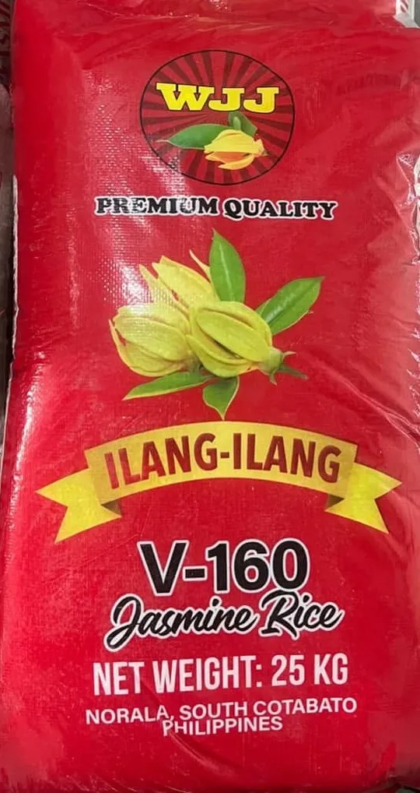
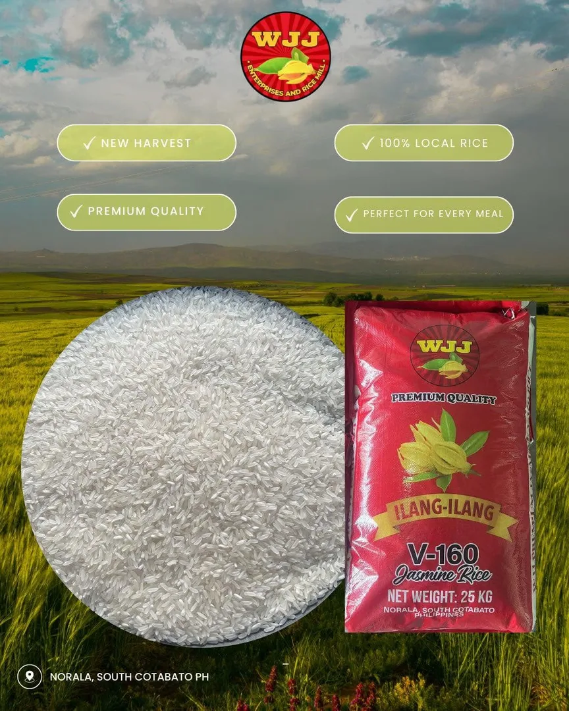
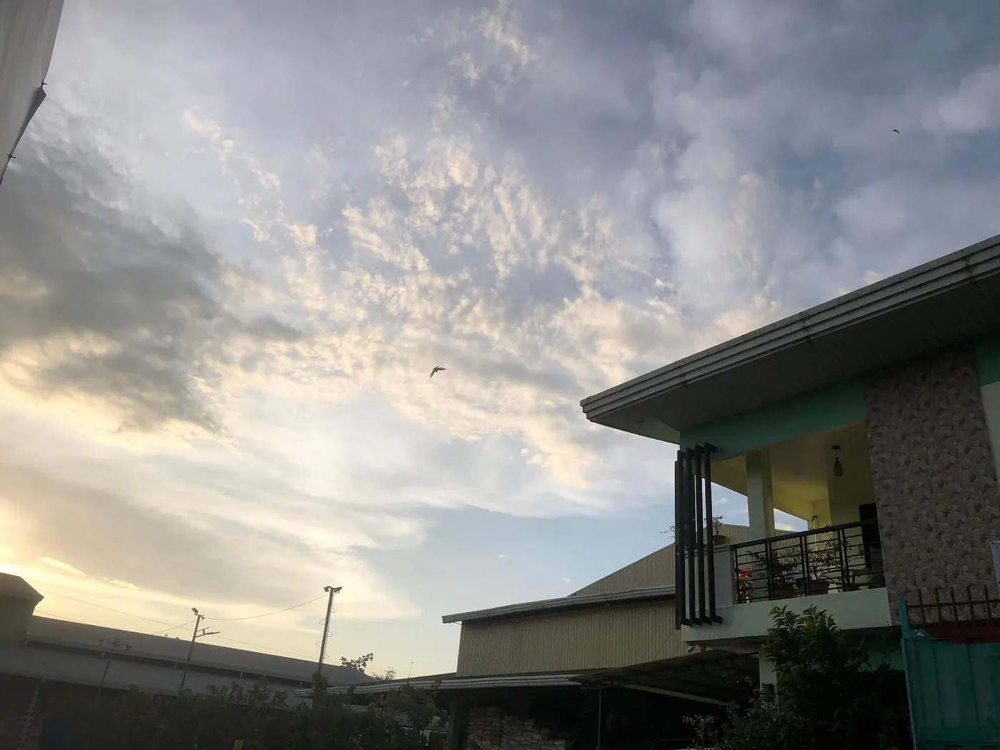
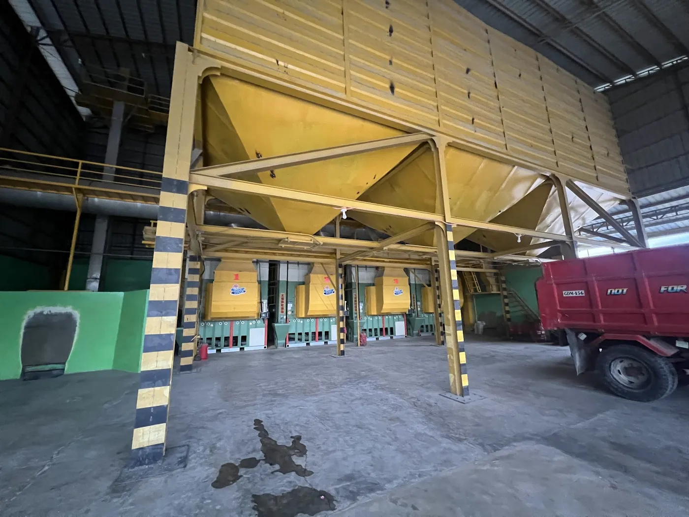
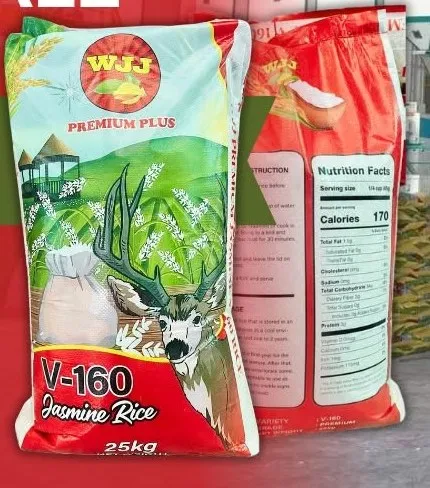
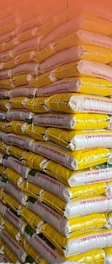

WJJ
Enterprises & Rice Mill
Basta WJJ Rice, Doble ang Smile!
Excellent eating-quality Mindanao milled rice, direct from our rice mill in Norala, South Cotabato, the Rice Bowl of the South.
- New harvest
- 100% local rice
- Premium quality

Part 1 of 5
Where our rice comes from
Our rice mill is in Barangay Lapuz, Norala, South Cotabato, known as the Rice Bowl of the South.
We also sell at WJJ Buy and Sell on the National Highway in Isulan, Sultan Kudarat.

Part 2 of 5
How we mill it
From palay to the white rice on your plate, in four steps. Keep scrolling to watch one grain go through the mill.

Dry
Fresh palay goes into our grain dryers first.
Remove the husk
The hard outer husk comes off. What is left is brown rice.
Polish
The brown bran layer is polished away, leaving white rice.
Pack
The rice goes into 25 kg WJJ sacks, ready for you.
Part 3 of 5
Pick your rice
Three kinds, all in 25 kg sacks. Prices change with the harvest, so message us for today's price.

Premium Plus Jasmine
- Variety
- V-160 Jasmine
- Grade
- Premium Plus
- Sack
- 25 kg
- Price
- Message us
Tonner Banay-Banay
- Variety
- Tonner
- Grade
- Premium Quality
- Sack
- 25 kg
- Price
- Message us

Part 4 of 5
Buying in bulk?
200sacks minimum (25 kg each) for our special walk-in wholesale price
- Message us which rice you want and how many sacks.
- We send you our wholesale quote.
- Pick up your order at the rice mill in Brgy. Lapuz, Norala.
Part 5 of 5
Order and visit
To order, message us on Facebook. Tell us the rice and how many sacks.
The rice mill
WJJ Enterprises
Brgy. Lapuz, Norala
South Cotabato 9508
Also at
WJJ Buy and Sell
National Highway, Isulan
Sultan Kudarat
Open every day
| Monday | 8:00 AM to 5:30 PM |
| Tuesday | 8:00 AM to 5:30 PM |
| Wednesday | 8:00 AM to 5:30 PM |
| Thursday | 8:30 AM to 5:30 PM |
| Friday | 8:30 AM to 5:30 PM |
| Saturday | 8:30 AM to 5:30 PM |
| Sunday | 8:00 AM to 5:30 PM |